ESFE Querétaro · IEEF — Formación Continua 2026 · 3 sesiones de 2 h
Word Profesional sin Complicaciones
Automatizar lo que hoy se hace a mano. Un documento institucional se construye en vivo, de la hoja en blanco a la entrega: plantilla, estilos, secciones, tablas desde Excel, índices automáticos, revisión entre varias personas y limpieza final.
Antes de empezar: ¿qué hace usted en Word?
Cinco preguntas, dos minutos, sin nombre. No hay respuestas equivocadas — y la de malos hábitos la hemos contestado todos que sí. Lo que contesten decide qué vemos en las seis horas.

Apunte la cámara del teléfono al código. El código es un enlace: también se puede tocar desde el teléfono o la computadora.
Abrir la encuesta →docs.google.com/forms/…/viewform
Resultados en vivo
Esta sección no aparece en la página normal: sólo se ve si la dirección termina en
#resultados.
Para proyectar: resultados en pantalla completa · el formulario
Para borrar las respuestas (después de probar, o entre grupos): en el formulario, pestaña Respuestas → menú ⋮ → Eliminar todas las respuestas. No se puede deshacer.
Requisito: activar en el formulario Configuración → Respuestas → Ver resumen de respuestas. Sin eso el recuadro sale vacío.
Empiece aquí
Si sólo va a bajar una cosa, baje la número 1. Son archivos sueltos: se bajan con un clic y se abren con doble clic. No hace falta descomprimir nada.
¿No quiere bajar nada, o no se deja? El procedimiento completo está en esta misma página, más abajo: los diez pasos, con las pantallas de Word. Se lee aquí, sin descargar.
¿Quiere todo de una vez y sabe abrir un ZIP? Está más abajo, en Material de la sesión 2. Si no sabe abrirlo, no lo necesita: con los cuatro de arriba tiene lo mismo.
Si algo no se deja bajar o abrir
Tres dudas que salieron en clase. Haga clic en la suya. No tiene que bajar nada para leer esto.
? ¿Cómo bajo un archivo de esta página?
- Haga un clic en el botón verde o en el enlace. Nada más: ni clic derecho, ni nada especial.
- Espere dos segundos. El navegador le avisa abajo a la izquierda, o arriba a la derecha.
- Haga clic en ese aviso para abrir el archivo.
- ¿Ya desapareció el aviso? No pasa nada: el archivo sí se bajó.
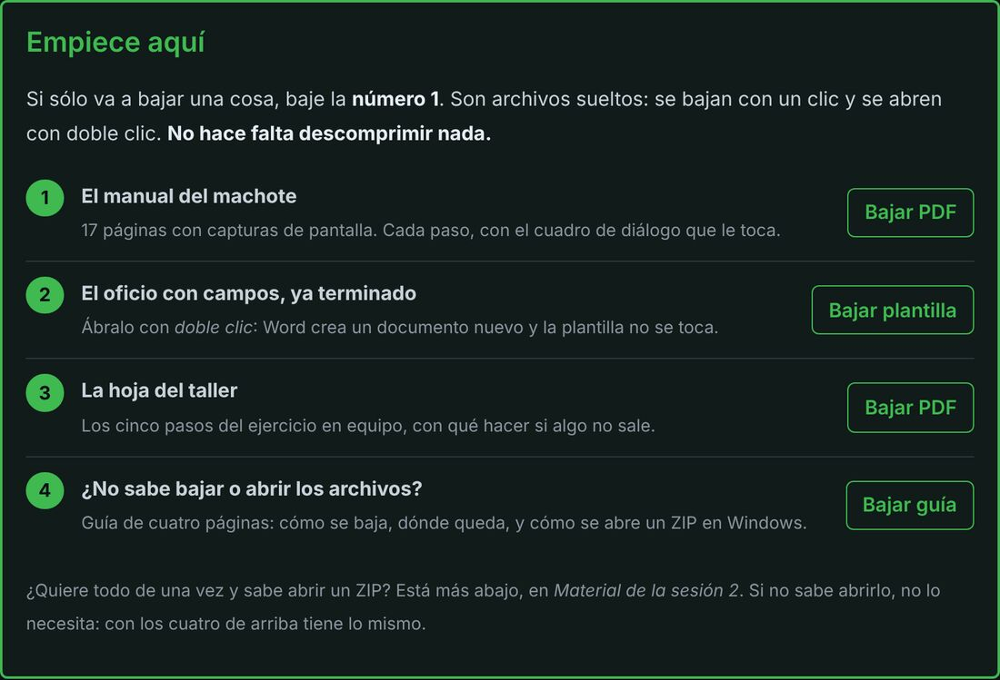
? ¿Qué hago con cada tipo de archivo?
.pdf— un manual. Doble clic, se abre solo..dotx— una plantilla. Doble clic: Word crea un documento nuevo y la plantilla queda intacta..docxy.xlsx— documento de Word y hoja de Excel. Doble clic..txt— texto simple. Doble clic..xml— no lo abra. Se carga desde dentro de Word, como dice el paso 8..zip— muchos archivos juntos. Hay que extraerlo primero.
? ¿Y si bajé el ZIP y no sé abrirlo?
- Pulse Windows + E y vaya a Descargas.
- Busque
CURSO-WORD-sesion-2.zip. - Clic derecho encima ▸ Extraer todo…
- En la ventana que sale, clic en Extraer. No cambie nada.
- Se crea una carpeta con el mismo nombre pero sin
.zip. Ahí está todo. Abra primero elLEEME.txt.
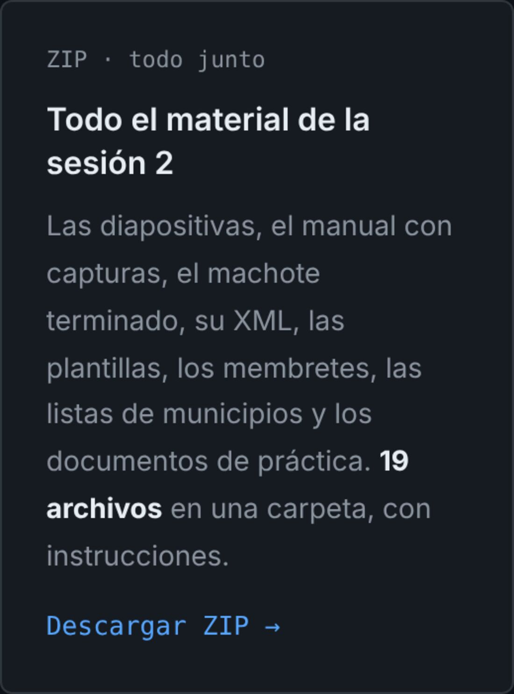
Y si de plano no se deja: cópielo al Escritorio y extráigalo ahí. O no lo use — con los archivos sueltos del recuadro verde tiene lo mismo.
El machote, paso a paso, aquí mismo
Los diez pasos para convertir un oficio viejo en una plantilla con campos. Cada uno trae la pantalla de Word tal como la va a ver. Haga clic en el paso que le interese para abrirlo.
1 Preparar la hoja
Disposición ▸ Márgenes ▸ Márgenes personalizados
- Tamaño de papel: Carta.
- Margen superior 3.6 cm — tiene que caber el membrete.
- Izquierdo, derecho e inferior: 2.5 cm.
- Medianil en 0. Si trae medio centímetro, le corre todo el texto a la derecha.
- Pestaña Diseño ▸ Desde el borde: encabezado 0 cm, pie 0 cm.
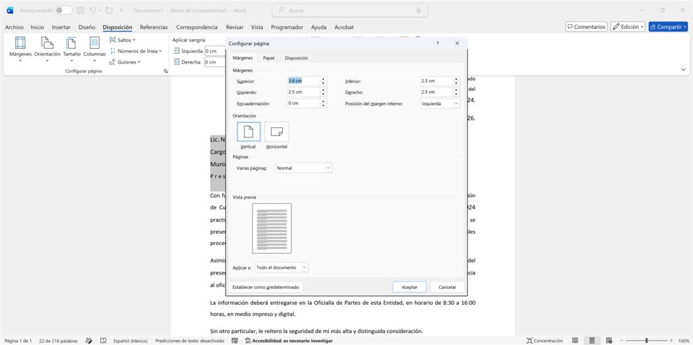
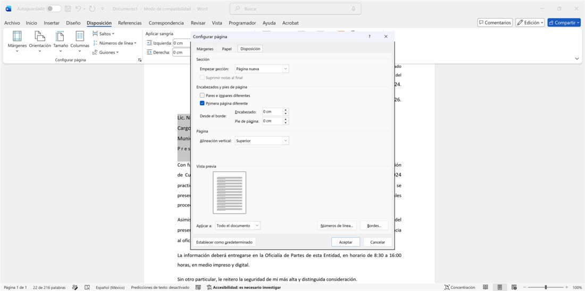
2 El membrete, de borde a borde
Doble clic en el encabezado ▸ Insertar ▸ Imágenes ▸ Este dispositivo
- Inserte su membrete, o
membrete-ejemplo.pngpara practicar. - Formato de imagen ▸ Tamaño: escriba 21.59 cm de ancho. Es el ancho exacto de la hoja carta. No la estire con el ratón.
- Ajustar texto ▸ Cuadrado.
- Ajustar texto ▸ Más opciones de diseño ▸ pestaña Posición: horizontal y vertical en 0 cm, y en los dos casos respecto de la Página.
- Desmarque Mover objeto con el texto.
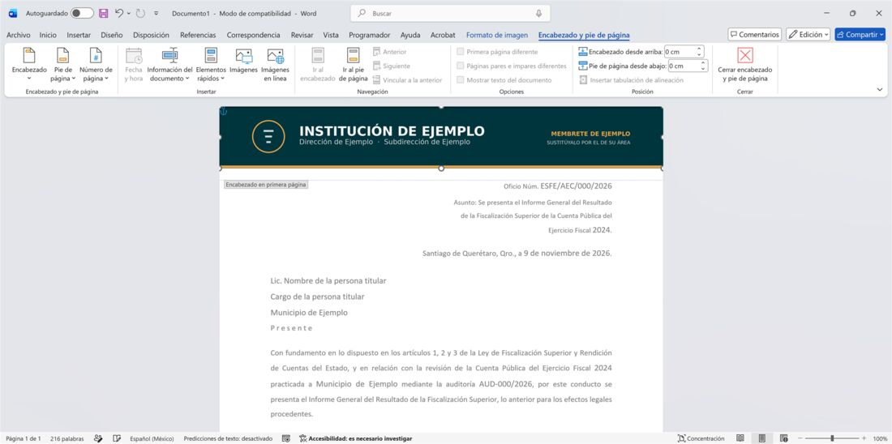
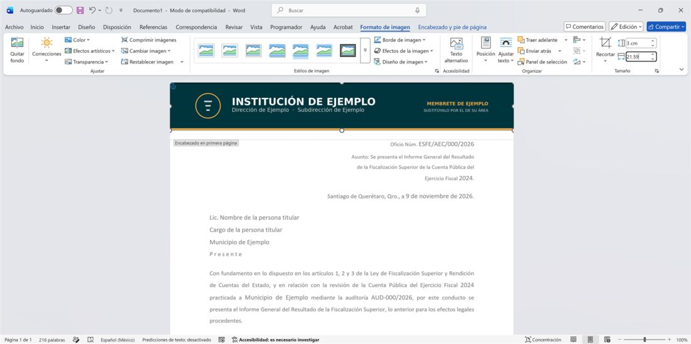
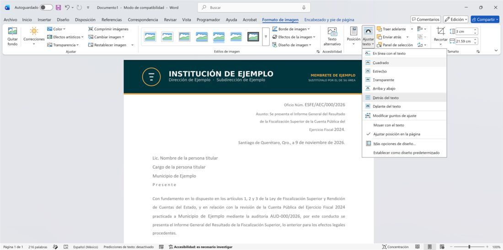
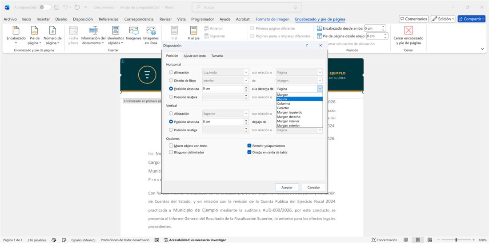
¿El texto del oficio se le sube encima de la banda? Puso Detrás del texto. En el encabezado va Cuadrado.
3 La cintilla del pie
Doble clic en el pie de página ▸ Insertar ▸ Imágenes
- Inserte la cintilla, también de 21.59 cm de ancho.
- Ajustar texto ▸ Detrás del texto. Aquí sí, al revés que arriba: hay que poder escribir encima de ella.
- Posición ▸ Más opciones ▸ Vertical: Alineación Inferior con relación a la Página. Así se pega sola al borde de abajo.
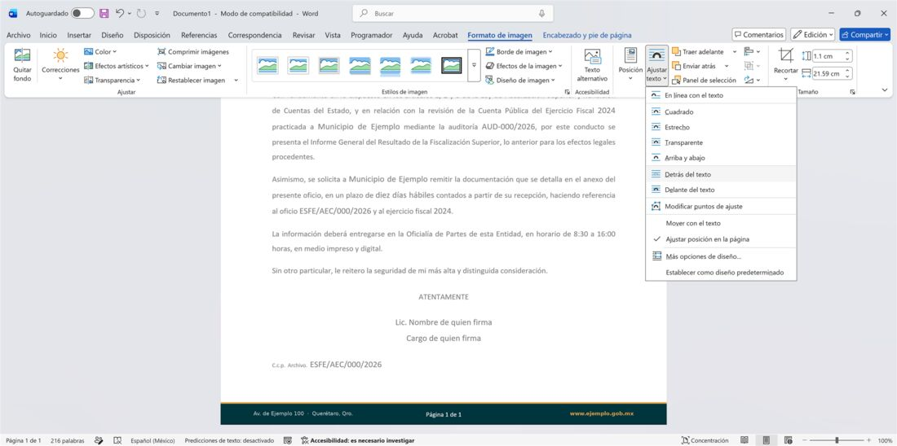
4 El número de página, encima de la cintilla
Con el cursor en el pie, centrado y en letra blanca
- Pulse Ctrl+F9. Aparecen unas llaves
{ }. Nunca se teclean a mano, sólo con Ctrl+F9. - Dentro escriba
QUOTE "Página " - Ctrl+F9 otra vez, anidado, y escriba
PAGE - Flecha derecha para salir, y escriba
" de " - Ctrl+F9 y escriba
NUMPAGES - F9 para actualizar. Alt+F9 enseña y esconde el código.
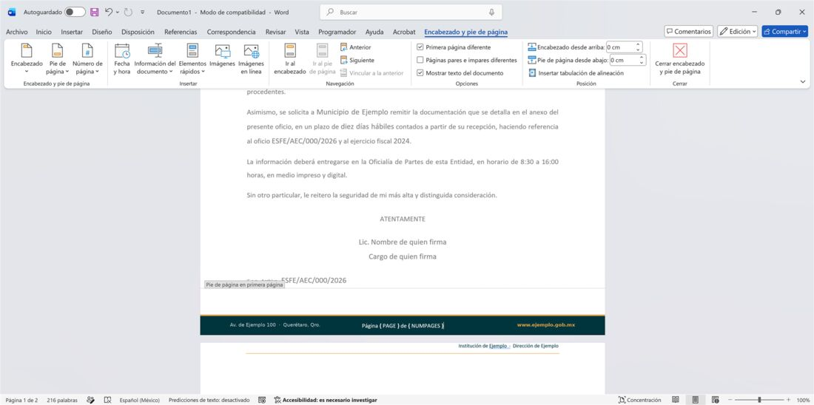
!Error, borre todo y empiece de nuevo: alguna llave se tecleó a mano. No lo bloquee con Ctrl+F11: eso congela el resultado y el de 2 se quedaría en de 2 aunque el oficio crezca.
5 Pegar el texto del oficio
Ctrl+Shift+V — o Inicio ▸ Pegar ▸ Mantener sólo texto
- Copie el texto del oficio que quiere convertir en machote.
- Péguelo con Ctrl+Shift+V, que pega sólo el texto.
- Así no entra el formato del documento viejo y no arrastra problemas.
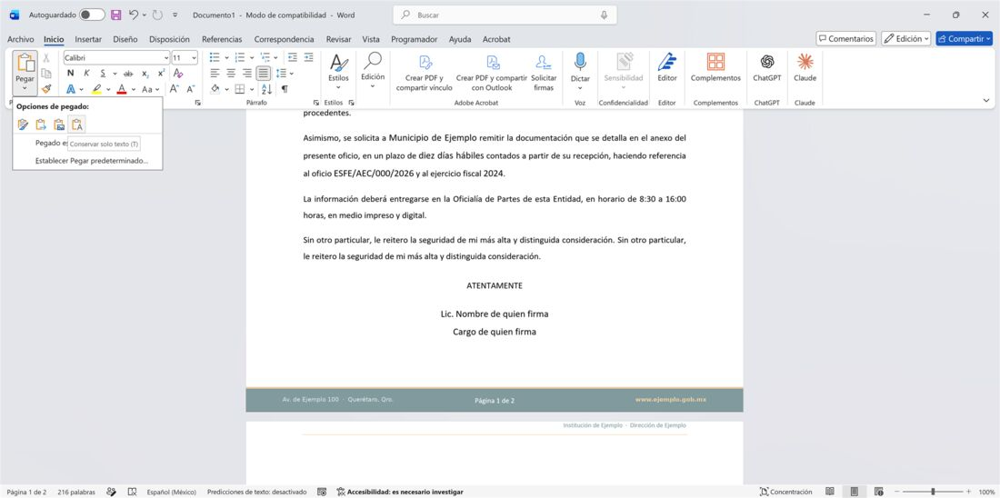
6 Convertir los datos en campos
Programador ▸ grupo Controles
- Si no ve la pestaña Programador: Archivo ▸ Opciones ▸ Personalizar cinta y márquela. Es una vez por computadora.
- Seleccione el dato y haga clic en el icono que le toca: Aa texto · calendario fecha · lista desplegable · lista con lápiz cuadro combinado (elige de la lista o escribe otro).
- Para cada uno: Propiedades ▸ escriba el Título y marque No se puede eliminar el control de contenido.
- En una lista desplegable, botón Agregar… por cada opción. Los 18 municipios están en el archivo
municipios-queretaro.txt, para copiarlos.
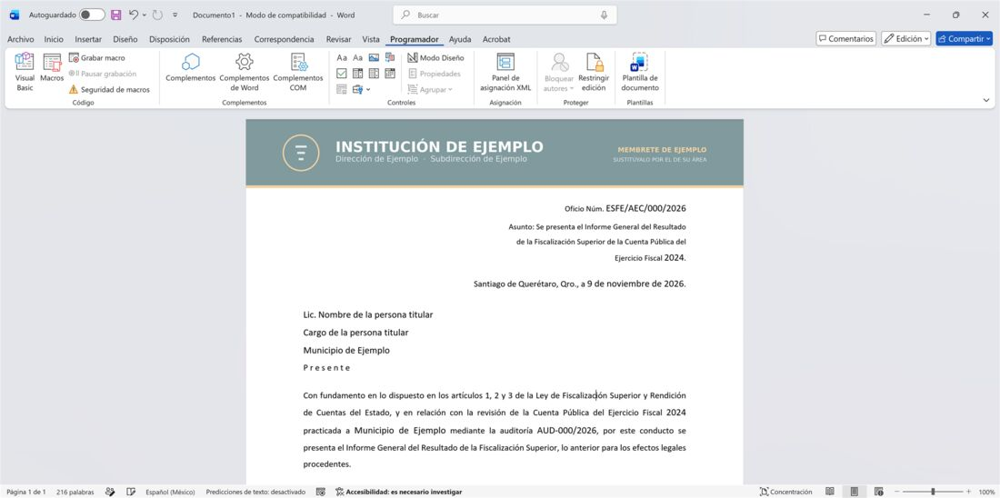

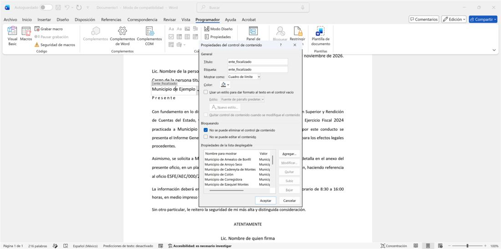
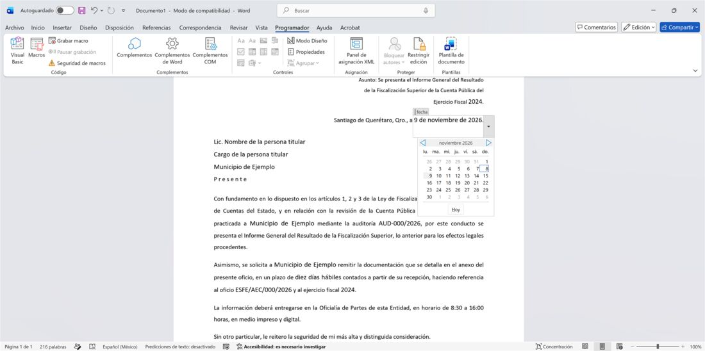
7 Que los datos repetidos se llenen solos
Insertar ▸ Elementos rápidos ▸ Propiedad del documento
- Primero, lo importante: dos controles que se llaman igual no se vinculan. Siguen siendo dos cajas independientes. Hay que enlazarlos a un dato, no entre ellos.
- Borre los controles repetidos que haya hecho a mano.
- En cada lugar donde aparece el dato: Insertar ▸ Elementos rápidos ▸ Propiedad del documento y elija la misma propiedad en todos (por ejemplo Compañía para el ente).
- Programador ▸ Propiedades ▸ Título: póngale el nombre que sí dice algo.
- Escriba el dato en uno y haga clic fuera del control.
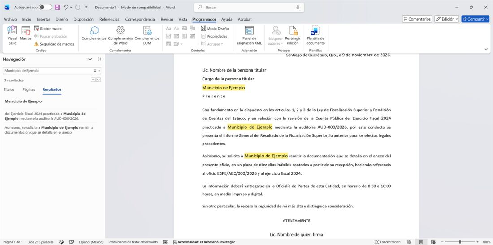
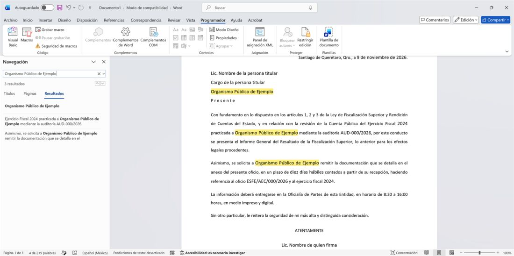
¿No cambia nada? No salió del control. Haga clic en otro párrafo.
8 Sin límite de campos: el panel XML
Programador ▸ Panel de asignación XML
- El camino del paso 7 alcanza para unos trece datos. Si necesita más, o nombres propios como
ejercicio_fiscal, es por aquí. - Baje
campos-oficio.xmly guárdelo donde lo encuentre. - Programador ▸ Panel de asignación XML. En el desplegable del panel: Agregar nueva parte, y elija el archivo.
- Haga clic en el control; en el panel, clic derecho sobre el nodo ▸ Asignar al control de contenido seleccionado.
- Repita en cada copia del dato, siempre al mismo nodo.
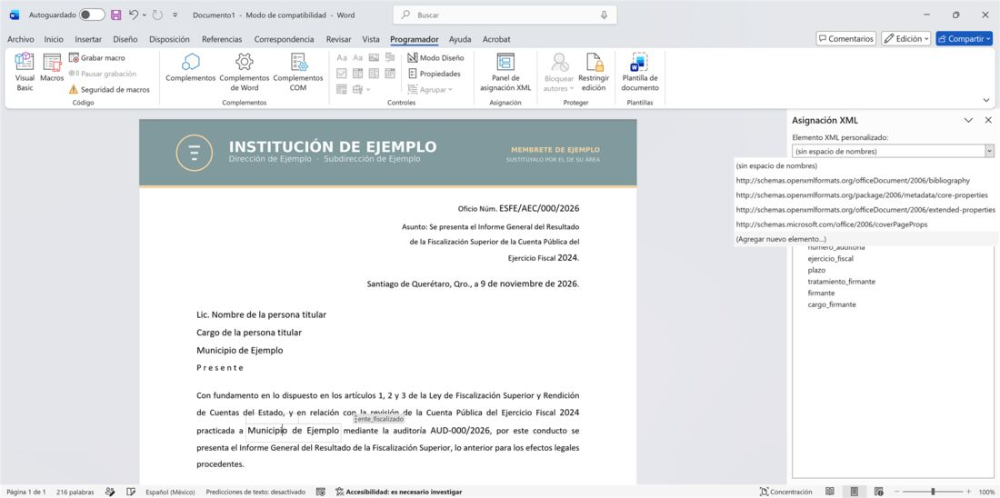
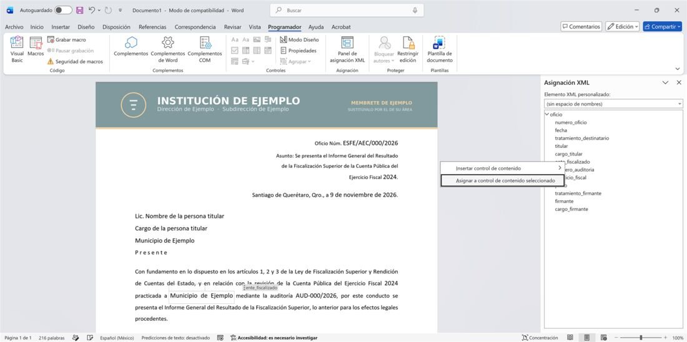
9 El candado y la plantilla
Revisar ▸ Restringir edición
- Permitir sólo este tipo de edición ▸ Rellenando formularios ▸ Sí, aplicar la protección. La contraseña es opcional.
- Compruebe las tres cosas: escribir en un campo sí, escribir en el texto fijo no, borrar un campo no.
- La otra forma, sin contraseña: Programador ▸ Controles ▸ Agrupar ▸ Agrupar. Deja editable sólo lo que es control.
- Archivo ▸ Guardar como ▸ Plantilla de Word (.dotx).
- Cierre todo y haga doble clic al
.dotx.
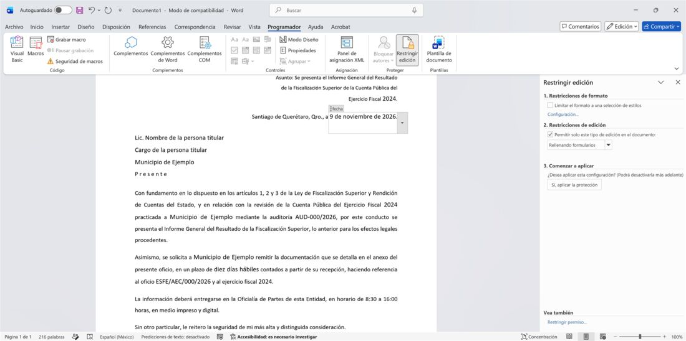
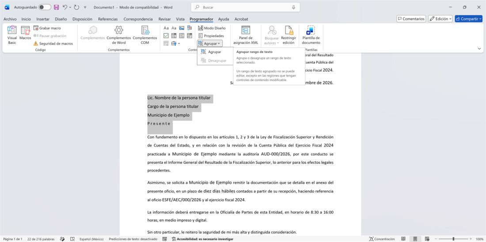
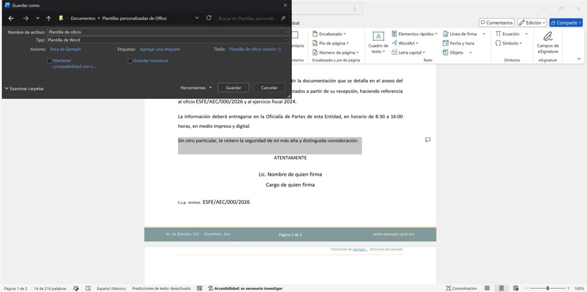
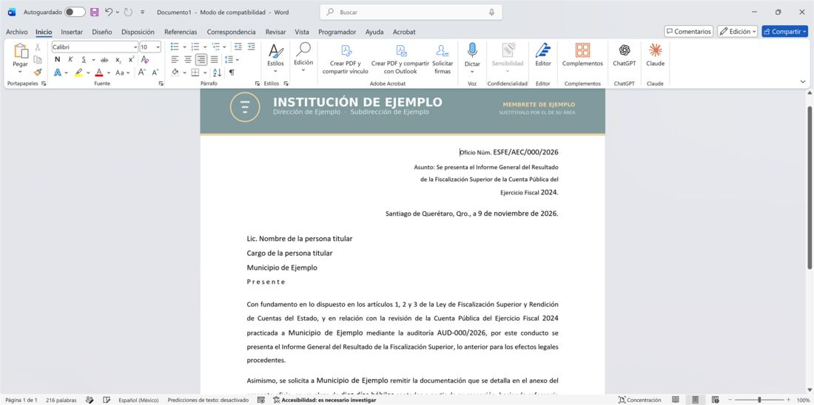
¿Ya protegió y ahora no puede corregir? Mismo panel, Suspender la protección.
10 Guardar piezas para reutilizarlas
Insertar ▸ Elementos rápidos ▸ Guardar selección en una galería
- Seleccione el bloque terminado: la firma, el C.c.p., el párrafo de fundamento.
- Insertar ▸ Elementos rápidos ▸ Guardar selección en una galería de elementos rápidos.
- Nombre corto · Galería Autotexto · Guardar en: la plantilla del oficio. Si lo deja en
Normal.dotm, sólo existe en su computadora. - Para volver a insertarlo: escriba el nombre y pulse F3.
- Para ver todo lo guardado: Elementos rápidos ▸ Organizador de bloques de creación.
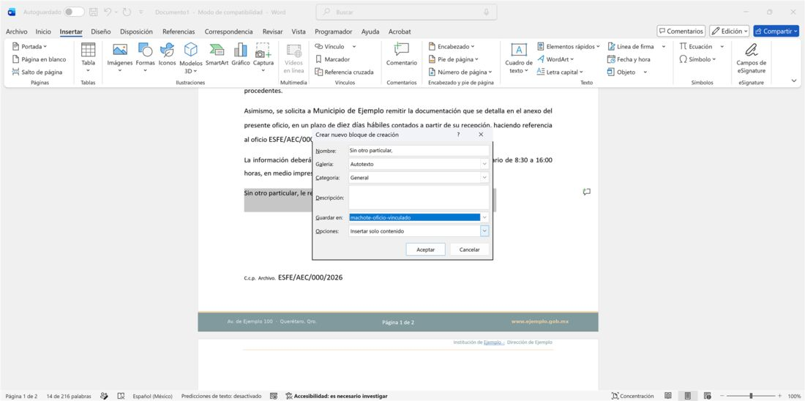
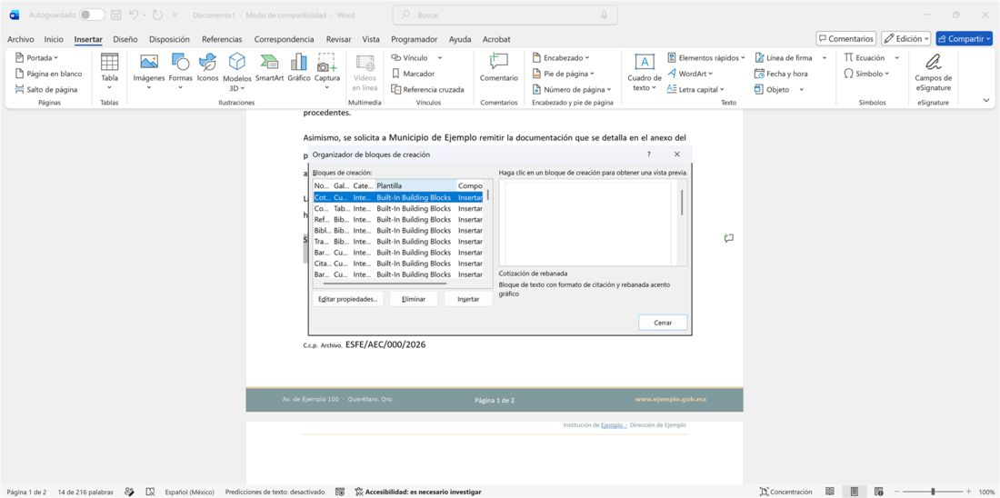
Normal.dotm y quiere compartirlo, vuelva a guardarlo eligiendo la plantilla del oficio en Guardar en.¿Lo prefiere impreso, o para leer sin internet? Es el mismo contenido en el manual en PDF, y el documento ya terminado está arriba, en el recuadro verde.
Material de práctica
Descárguelos antes de la sesión 1. Son los archivos sobre los que trabajamos durante todo el curso.
Resumen de la sesión 1 · viernes 6 de noviembre
Dos minutos de lectura. Si faltó a la sesión o quiere repasar antes de la siguiente, esto es lo que pasó y lo que debería tener en su computadora.
Qué debería tener en su computadora:
su archivo plantilla-oficio.dotx. Si no alcanzó a terminarlo, descargue el de
referencia y compárelo con el suyo.
teh. Si no se subraya en rojo, el idioma de corrección no quedó aplicado —
y ése es el ajuste que más problemas da después.
Material de la sesión 2 · el machote
Descárguelos antes de la sesión 2. ¿Tiene prisa? Baje el ZIP: trae todo lo de abajo en una sola carpeta, con un LEEME que dice por dónde empezar. Si prefiere sólo una cosa, cada archivo sigue estando por separado.
PAGE y NUMPAGES.
Descargar DOTX →


Programador ▸ Panel de asignación XML ▸
Agregar nueva parte. Es lo que permite que los datos repetidos se llenen solos.
Descargar XML →
Las tres sesiones
Es un solo documento que nace, crece y se entrega. Las diapositivas de cada sesión se descargan aquí.
Para llevarse
No hace falta apuntar rutas de menú durante el curso: todo queda aquí.
Quién lo imparte
Dr. Leopoldo Rodríguez Salazar — Ingeniero, doctor en ingeniería y director de Helgen Technologies. Imparte a través de IDEA · Instituto Digital de Estudios Avanzados.